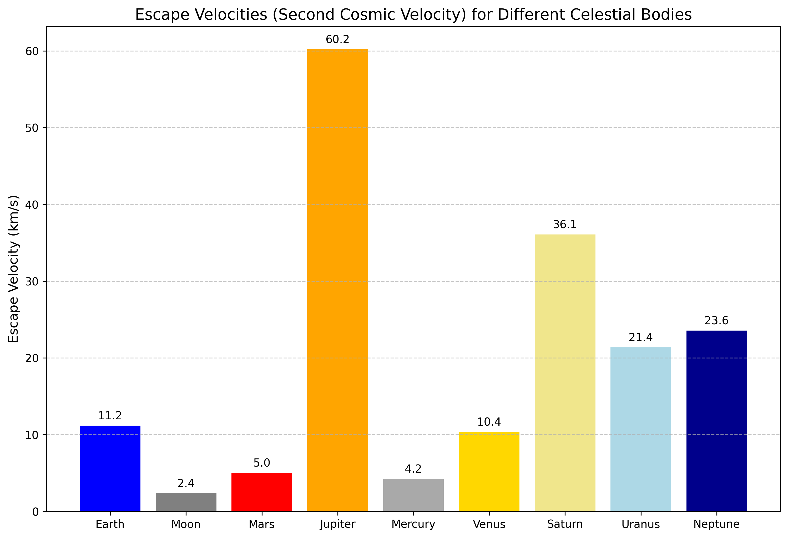
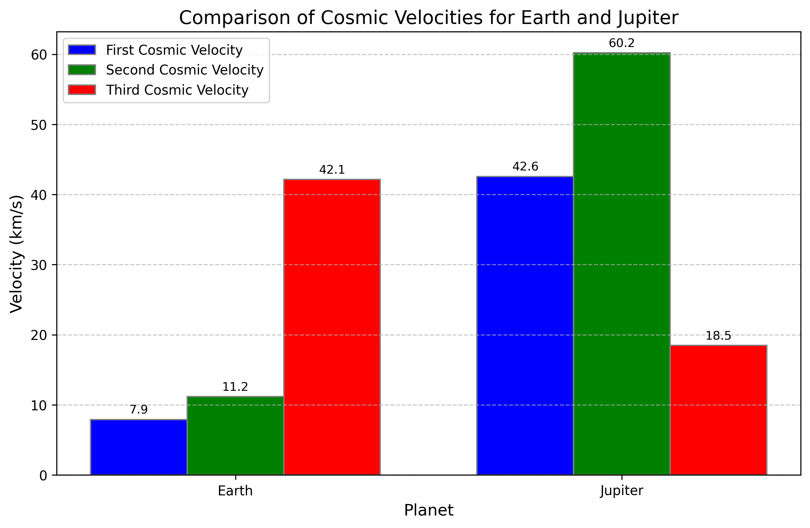
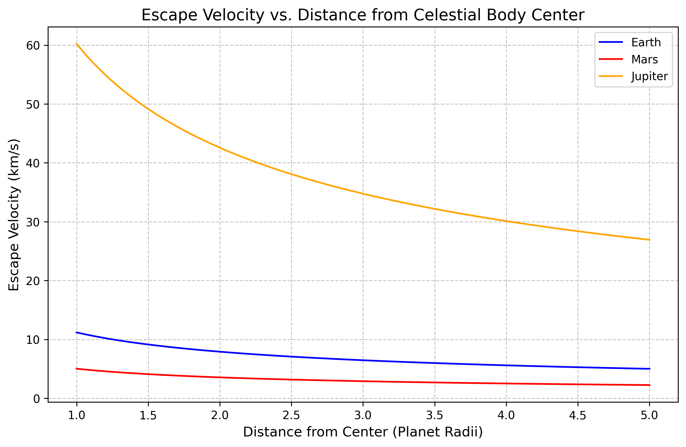
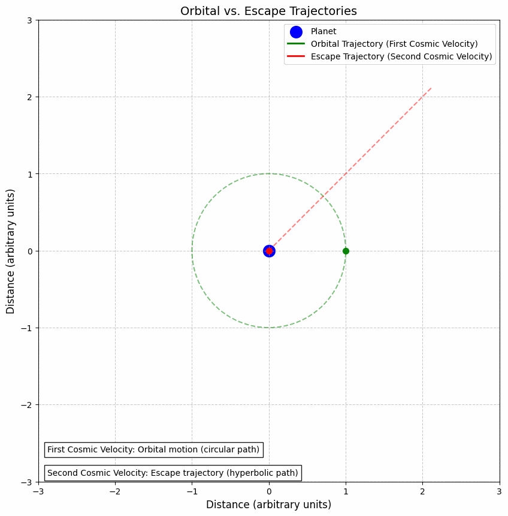
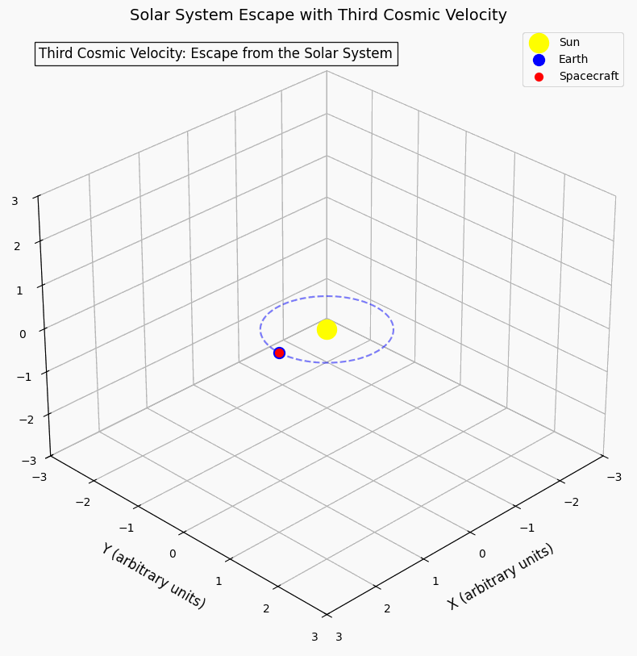

Escape Velocities and Cosmic Velocities
Motivation
The concept of escape velocity is crucial for understanding the conditions required to leave a celestial body's gravitational influence. Extending this concept, the first, second, and third cosmic velocities define the thresholds for orbiting, escaping, and leaving a star system. These principles underpin modern space exploration, from launching satellites to interplanetary missions.
Theoretical Foundation
Gravitational Potential Energy
The foundation of cosmic velocities lies in understanding gravitational potential energy. For an object of mass \(m\) in the gravitational field of a body with mass \(M\), the gravitational potential energy is given by:
Where:
- \(G\) is the gravitational constant (\(6.67430 \times 10^{-11} \, \text{m}^3 \, \text{kg}^{-1} \, \text{s}^{-2}\))
- \(M\) is the mass of the central body
- \(m\) is the mass of the object
- \(r\) is the distance between the centers of the two bodies
Conservation of Energy
The total energy of an object in a gravitational field is the sum of its kinetic energy and potential energy:
This total energy determines whether an object is bound to the gravitational field (negative total energy) or can escape to infinity (zero or positive total energy).
The Three Cosmic Velocities
First Cosmic Velocity (Orbital Velocity)
The first cosmic velocity is the minimum velocity needed for an object to maintain a circular orbit around a celestial body at a given distance. It is derived by equating the gravitational force with the centripetal force required for circular motion:
Solving for velocity:
At the surface of a body with radius \(R\), the first cosmic velocity is:
Second Cosmic Velocity (Escape Velocity)
The second cosmic velocity, also known as escape velocity, is the minimum velocity needed for an object to escape the gravitational field of a celestial body. It is derived from the principle that the total energy must be at least zero for escape:
Solving for the minimum velocity at the surface (where \(r = R\)):
Notice that the escape velocity is exactly \(\sqrt{2}\) times the orbital velocity at the same distance.
Third Cosmic Velocity (Solar System Escape Velocity)
The third cosmic velocity is the velocity needed for an object to escape the gravitational field of the Sun from a particular planet's orbit. For an object at Earth's orbit, it is the velocity needed to leave the Solar System entirely.
The formula is similar to the second cosmic velocity, but uses the Sun's mass and the distance from the Sun:
Where \(r_{orbit}\) is the distance of the planet from the Sun.
Mathematical Analysis
Relationship Between Cosmic Velocities
The relationship between the first and second cosmic velocities is straightforward:
This means that to escape a celestial body, an object needs approximately 1.414 times the velocity required to orbit it at the same distance.
Variation with Distance
All cosmic velocities decrease with increasing distance from the central body according to an inverse square root relationship:
This means that it's easier to escape a gravitational field from a higher starting point.
Variation with Mass
Cosmic velocities increase with the square root of the mass of the central body:
This explains why escape velocities for massive bodies like Jupiter are much higher than for smaller bodies like Earth or Mars.
Cosmic Velocities for Different Celestial Bodies
Computational Model and Visualization
Click to view Python code for cosmic velocities calculations and visualizations
import numpy as np
import matplotlib.pyplot as plt
import os
import imageio
import tempfile
from mpl_toolkits.mplot3d import Axes3D
# Constants
G = 6.67430e-11 # Gravitational constant (m^3 kg^-1 s^-2)
# Celestial body data
celestial_bodies = {
'Earth': {
'mass': 5.972e24, # kg
'radius': 6.371e6, # m
'color': 'blue',
},
'Moon': {
'mass': 7.342e22, # kg
'radius': 1.737e6, # m
'color': 'gray',
},
'Mars': {
'mass': 6.39e23, # kg
'radius': 3.389e6, # m
'color': 'red',
},
'Jupiter': {
'mass': 1.898e27, # kg
'radius': 6.9911e7, # m
'color': 'orange',
}
}
# Solar system data
solar_system = {
'Sun': {
'mass': 1.989e30, # kg
'radius': 6.957e8, # m
},
'Earth': {
'distance_from_sun': 1.496e11, # m (1 AU)
},
'Jupiter': {
'distance_from_sun': 7.785e11, # m (5.2 AU)
}
}
# Function to calculate first cosmic velocity (orbital velocity)
def calculate_first_cosmic_velocity(mass, radius):
return np.sqrt(G * mass / radius)
# Function to calculate second cosmic velocity (escape velocity)
def calculate_second_cosmic_velocity(mass, radius):
return np.sqrt(2 * G * mass / radius)
# Function to calculate third cosmic velocity (escape velocity from the solar system)
def calculate_third_cosmic_velocity(distance_from_sun):
sun_mass = solar_system['Sun']['mass']
return np.sqrt(2 * G * sun_mass / distance_from_sun)
# Calculate cosmic velocities for all celestial bodies
for body, data in celestial_bodies.items():
data['first_cosmic_velocity'] = calculate_first_cosmic_velocity(data['mass'], data['radius'])
data['second_cosmic_velocity'] = calculate_second_cosmic_velocity(data['mass'], data['radius'])
data['orbital_velocity_leo'] = calculate_first_cosmic_velocity(data['mass'], data['radius'] + 400e3)
# Calculate third cosmic velocity for Earth and Jupiter
earth_third_cosmic = calculate_third_cosmic_velocity(solar_system['Earth']['distance_from_sun'])
jupiter_third_cosmic = calculate_third_cosmic_velocity(solar_system['Jupiter']['distance_from_sun'])
# Create visualizations (bar charts, animations, etc.)
The computational model calculates the three cosmic velocities for various celestial bodies and visualizes them through charts and animations. The model demonstrates how these velocities vary with the mass and radius of celestial bodies, providing insights into the requirements for different types of space missions.
Comparative Analysis
The following chart compares the escape velocities (second cosmic velocity) for various celestial bodies in our solar system:

As shown, the escape velocity varies significantly across celestial bodies, with Jupiter requiring the highest velocity for escape due to its large mass, while the Moon has a relatively low escape velocity.
Detailed Comparison of Earth and Jupiter
The following chart compares all three cosmic velocities for Earth and Jupiter:

This comparison illustrates how the cosmic velocities scale with the mass of the celestial body. Jupiter, being much more massive than Earth, requires significantly higher velocities for both orbiting and escaping.
Variation with Distance
The escape velocity decreases as the distance from the center of a celestial body increases:

This graph shows how the escape velocity decreases with distance for Earth, Mars, and Jupiter. The x-axis is normalized to the radius of each body, showing that the relationship follows the same pattern regardless of the body's size.
Visualizations of Cosmic Velocities
Orbital vs. Escape Trajectories
The following animation illustrates the difference between an orbital trajectory (first cosmic velocity) and an escape trajectory (second cosmic velocity):

With the first cosmic velocity, an object follows a closed circular or elliptical path around the central body. With the second cosmic velocity, the object follows an open hyperbolic path that allows it to escape the gravitational influence of the central body.
Solar System Escape
The third cosmic velocity enables a spacecraft to escape the Solar System entirely:

This animation shows a spacecraft leaving Earth's orbit with sufficient velocity to escape the Sun's gravitational field, demonstrating the concept of the third cosmic velocity.
Applications in Space Exploration
Launching Satellites
To place a satellite in orbit, it must be accelerated to at least the first cosmic velocity for its intended orbital altitude. For a Low Earth Orbit (LEO) at approximately 400 km above Earth's surface, this velocity is about 7.67 km/s.
The rocket equation, derived by Konstantin Tsiolkovsky, describes the relationship between the change in velocity (Δv), the exhaust velocity of the propellant, and the mass ratio of the rocket:
Where: - \(\Delta v\) is the change in velocity - \(v_e\) is the exhaust velocity - \(m_0\) is the initial mass (including propellant) - \(m_f\) is the final mass (after propellant is expended)
This equation highlights the exponential relationship between the required propellant and the desired velocity change, making it increasingly difficult to achieve higher velocities.
Interplanetary Missions
For missions to other planets, spacecraft typically use a combination of the first and second cosmic velocities along with gravitational assists. The Hohmann transfer orbit is an efficient method for interplanetary travel, using the minimum energy required to transfer between two circular orbits:
- The spacecraft first accelerates to escape Earth's gravitational influence (slightly above the first cosmic velocity).
- It then enters an elliptical transfer orbit around the Sun.
- Finally, it decelerates to enter orbit around the target planet.
The total Δv required for a Hohmann transfer from Earth to Mars is approximately 5.6 km/s, while a transfer to Jupiter requires about 9.1 km/s.
Gravity Assists
To reduce the propellant requirements for interplanetary missions, spacecraft often use gravity assists (also known as gravitational slingshots). By passing close to a planet, a spacecraft can gain or lose velocity relative to the Sun without expending propellant.
The Voyager missions used gravity assists from Jupiter and Saturn to gain enough velocity to escape the Solar System, effectively achieving the third cosmic velocity without the enormous propellant requirements that would otherwise be necessary.
Interstellar Travel Considerations
For potential future interstellar missions, the velocities required are far beyond the third cosmic velocity. The nearest star system, Alpha Centauri, is approximately 4.37 light-years away. Even traveling at 0.1c (10% of the speed of light, or about 30,000 km/s), such a journey would take over 40 years.
Proposed methods for achieving such velocities include:
- Nuclear Propulsion: Using nuclear fission or fusion to achieve higher exhaust velocities.
- Solar Sails: Using the pressure of sunlight or laser beams to accelerate a lightweight sail.
- Antimatter Propulsion: Utilizing matter-antimatter annihilation for maximum energy release.
- Breakthrough Starshot: A proposed mission using powerful ground-based lasers to accelerate small probes to approximately 0.2c.
Conclusion
The concepts of cosmic velocities are fundamental to understanding the requirements and limitations of space exploration. The first cosmic velocity enables satellites to orbit Earth, the second cosmic velocity allows spacecraft to escape a planet's gravitational field, and the third cosmic velocity permits escape from the Solar System.
As our technological capabilities advance, we continue to develop more efficient propulsion systems that bring us closer to achieving the velocities required for interplanetary and, eventually, interstellar travel. Understanding these velocity thresholds and their implications is essential for planning future space missions and expanding humanity's presence beyond Earth.